Formation
- Concepteur, Développeur de Solutions Digitales — Bac+3/4 (France) / équivalent Baccalauréat
- Développeur Web et Web Mobile — Bac+2 (France) / équivalent DEC
Compétences
Projets
IoT Hub
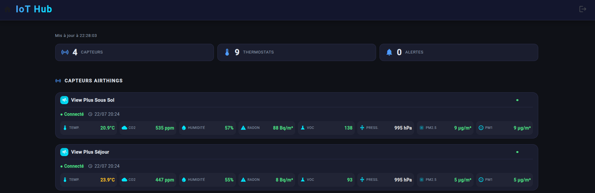
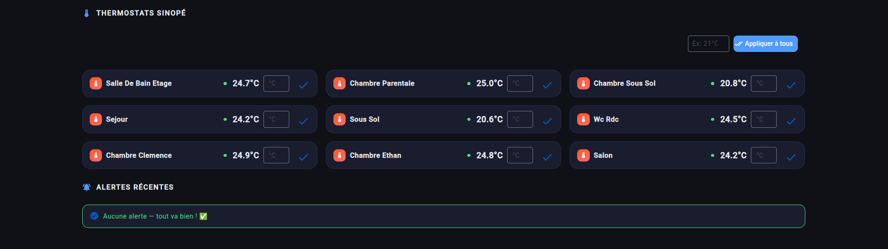
- Contexte : Projet personnel de domotique pour piloter le chauffage et surveiller la qualité de l'air de la maison en temps réel.
- Mission : Backend en architecture hexagonale modulaire (ports & adapters) intégrant l'API Airthings (OAuth2) et des thermostats Zigbee via MQTT. Authentification JWT multi-utilisateurs, notifications push en temps réel sur seuils dépassés (CO2, radon, VOC, particules fines), et frontend Angular en PWA installable (desktop et mobile), déployé en HTTPS sur VPS avec tunnel Tailscale vers un Raspberry Pi.
- Stack : Spring Boot (multi-modules), Spring Security, JWT, Flyway, PostgreSQL, MQTT, Zigbee2MQTT, OAuth2, Angular 18, PWA, Web Push, Docker, Nginx, VPS Hostinger, Raspberry Pi, Tailscale.
Fermette des Trois Tilleuls
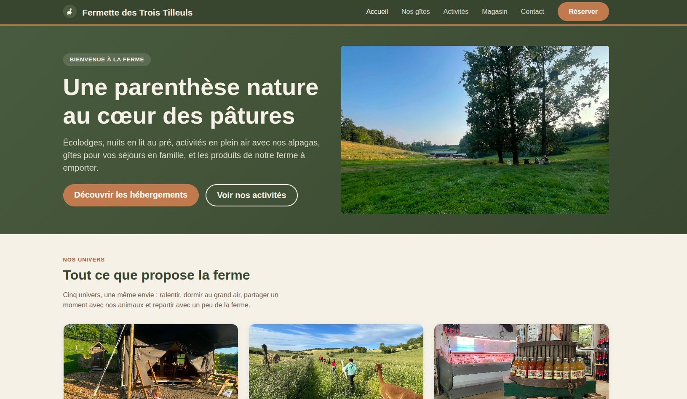
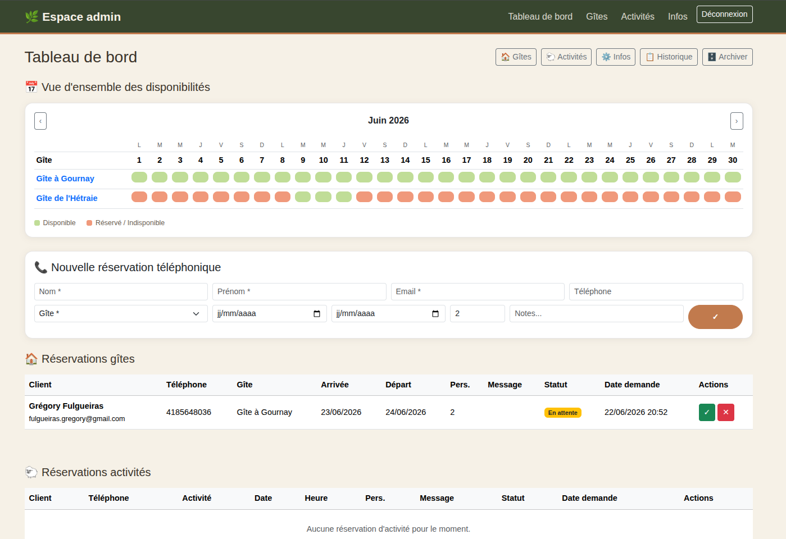
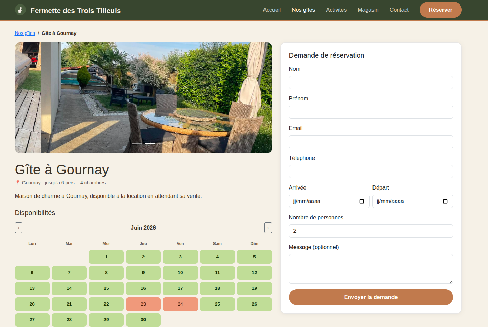
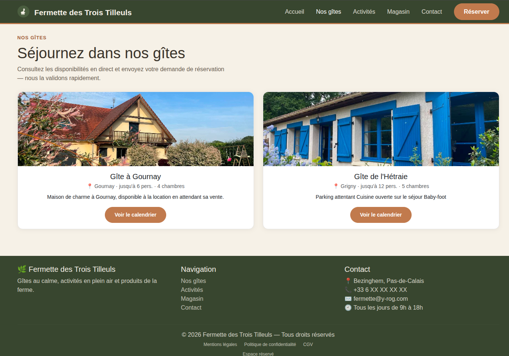
- Contexte : Site démo d'un projet client (amis) pour une ferme en France proposant des gîtes, activités et vente de produits fermiers.
- Mission : Développement d'un site vitrine complet avec système de réservation en ligne et espace admin sécurisé.
- Stack : Spring Boot 3, Spring Security, Thymeleaf, Bootstrap 5, PostgreSQL, Docker, Nginx, VPS Hostinger.
Jeux Olympiques
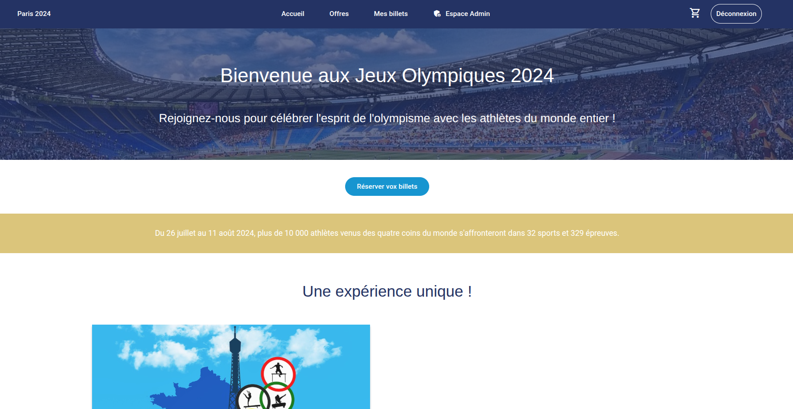
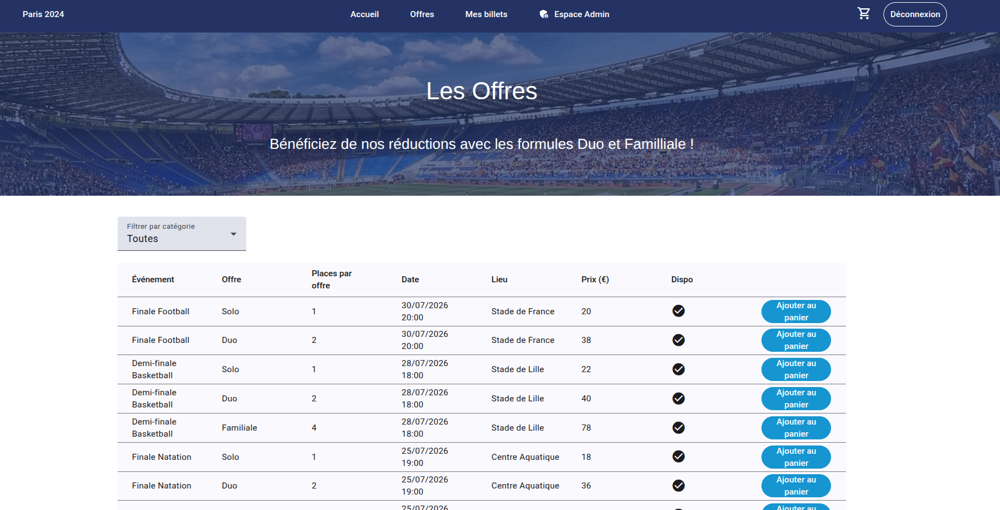
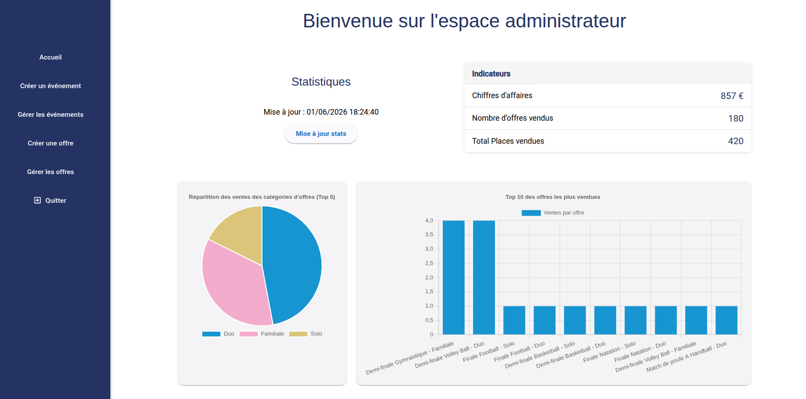
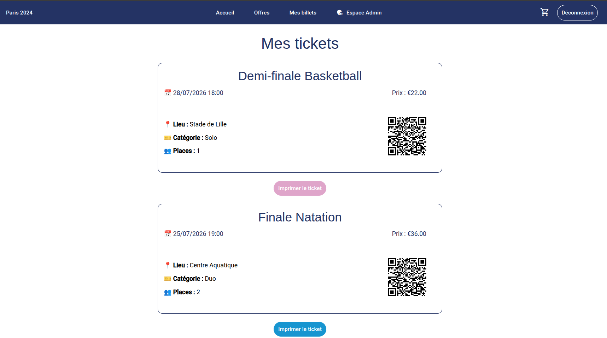
- Contexte : Projet de fin d'étude (Concepteur, Développeur de Solutions Digitales).
- Mission : Développement d'une billetterie en ligne avec espace admin, messagerie asynchrone et génération de QR codes.
- Stack : Angular 19, Spring Boot 3, PostgreSQL, RabbitMQ, Docker, Railway, Vercel.
Arcadia
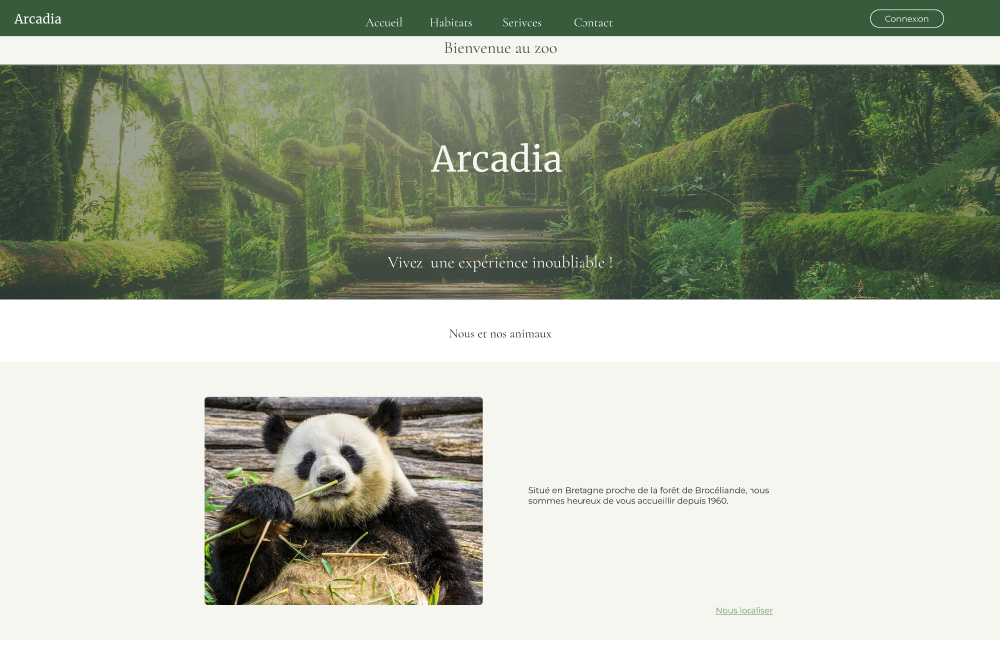
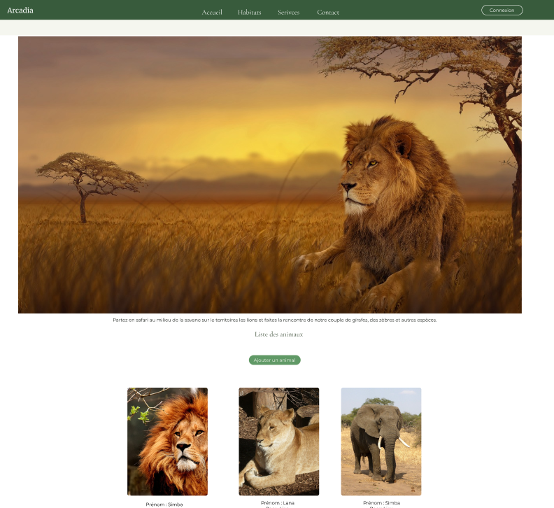
- Contexte : Projet de fin d'étude (Développeur Web et Web Mobile).
- Mission : Gestion d'un zoo avec plusieurs types d'utilisateurs.
- Stack : PHP, HTML/CSS (SASS), JavaScript, Bootstrap, Cloudinary, MailGun.